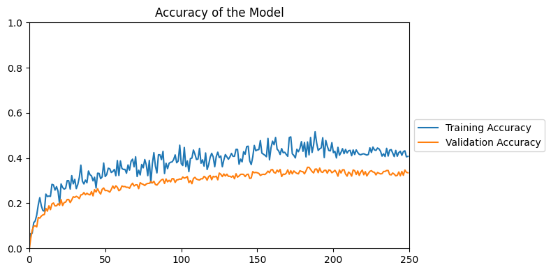
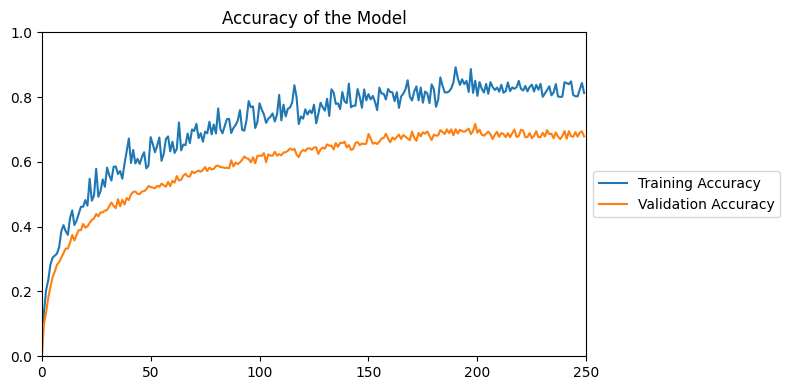

Fase 4
Et trobes en la fase de l'optimització del model, així que com més tems hi dediquis, probablement millor model aconseguiràs.
A continuació, trobaràs els resultats obtinguts durant l'optimització del model que has dut a terme. Per cada arquitectura que
has decidit entrenar, trobaràs les gràfiques detraining accuracy i de
validation accuracy pels diferents hiperparàmetres que has provat. Et pots moure
pels diferents blocs amb el menú de l'esquerra. Finalment, se't demana que especifiquis en la pestanya de
Definició Model Final el model que consideres que és millor i que, per tant, serà
el que entregaràs.
Tens 5 minuts per realitzar aquesta fase. El temps començarà a contar quan li donis click a la fletxa.
En tot moment, a baix a l'esquerra, trobaràs un indicador del temps que
et queda per poder acabar.
Tens la sort de viure en un entorn urbà on pots tenir accés a internet cada dia de l'any.
Gràcies a aquest fet, podràs invertir molt de temps en l'optimització del model, fet que tindrà
un impacte directe en l'accuracy d'aquest, doncs ben segur
trobaràs quina és la millor opció.
Aprofita-ho i aconsegueix el millor model possible!
Desgraciadament, vius en un entorn rural i no tens la possibilitat de tenir accés a internet
tots els dies de l'any.
Com a conseqüència, tens menys temps per realitzar l'optimització del model, fet que et portarà
a no poder provar tots els models que haguessis pogut provar amb una connexió més estable. Això
tindrà un impacte negatiu en l'accuracy del model final.
Fes el que puguis!
Important: Teniu 5 minuts per completar l'activitat

Final de l'activitat en
| Inici |
| Model A |
| Model B |
| Model C |
| Model D |
| Definició Model Final |
INICI |
Fes ús del menú de l'esquerra per moure't pels diferents models que has optimitzat.Assegura't d'omplir el formulari de la pestanya de Definició Model Final abans que acabi el temps. |
| No tens l'opció de veure aquests resultats. Prova altres. |
REGRESSIÓ LOGÍSITICA |
|
Versió simple |
|
CLASSIFICADOR NAIVE DE BAYES |
|
Versió simple |
|
|  | |
SUPPORT VECTOR MACHINE |
|
Ús de kernel lineal i C=0.01 |
Ús de kernel lineal i C=2 |
Ús de kernel sigmoid i C=0.01 |
Ús de kernel sigmoid i C=2 |
 |
 |
Ús de kernel rbf i C=0.01 |
Ús de kernel rbf i C=2 |
RANDOM FOREST |
|
Accuracy en funció del nombre de trees |
|
ELECCIÓ DEL MODEL FINAL |
Resultats de la Fase 4
Gràcies al fet que has tingut accés a internet tots els dies que has hagut de fer teletreball, has aconseguit fer una molt bona optimització del model i has seleccionat la millor opció que existeix. Gràcies a això, el teu model tindrà una accuracy molt alta.
Malauradament, no has tingut accés a internet tots els dies que has hagut de fer teletreball i no has pogut fer una bona optimització del model. De fet, no has seleccionat la millor estructura perquè ni tan sols la tenies entre les opcions. Tanmateix, el model que has escollit és prou bo i l'accuracy del teu model no serà tan baixa.